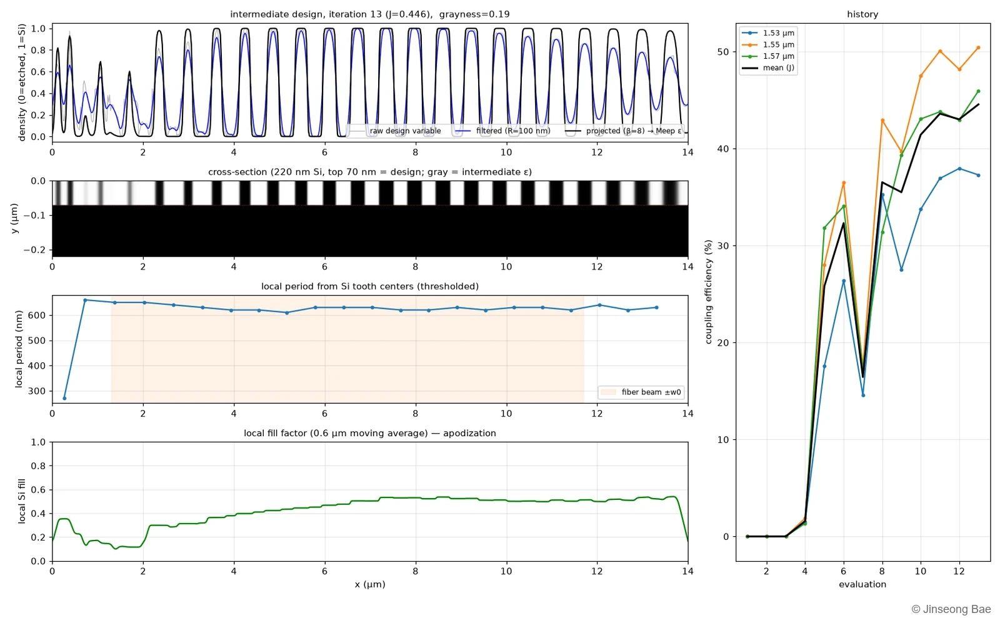
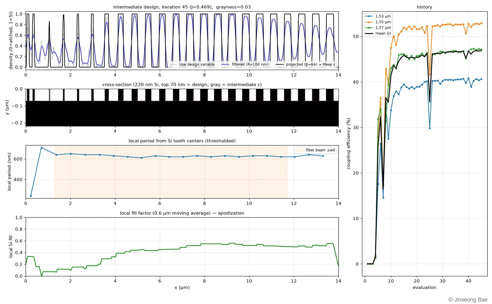
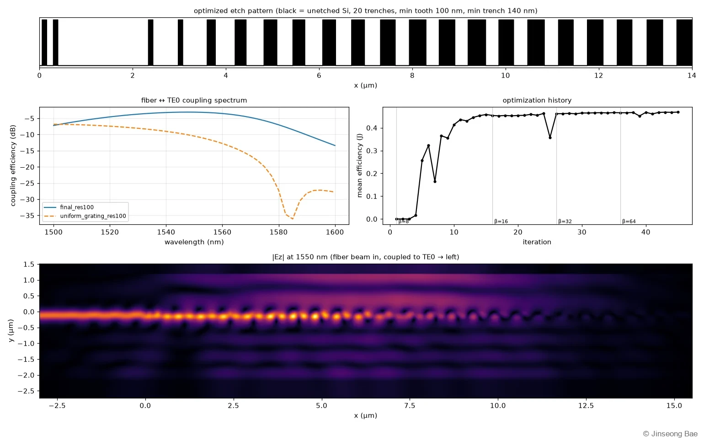

Problem and motivation
A grating coupler converts a fiber mode arriving obliquely from above into a waveguide mode on the chip. A uniform grating, tuned through only two variables (period and fill factor), cannot match the beam shape, so its efficiency has an upper bound. In an earlier example that optimized only those two variables, the limit was about 26 %.
I therefore widened the problem to topology inverse design, with the whole etch pattern as the variable. A single 70 nm shallow etch means the structure can be made with one mask. Instead of placing the initial value near a known answer, I started from uniform gray to see what the optimizer would find.
Simulation setup
| Solver | Meep 2D (x–z cross-section), MPI with 6 processes |
|---|---|
| Layer stack | Si 220 nm (n 3.45) / BOX SiO₂ 2 µm (n 1.45) / Si substrate, air above. PML 1 µm |
| Design region | 70 nm etch layer on the top surface, length 14 µm, 1D density with 701 pixels (20 nm) |
| Source | Gaussian beam, 10° from normal, beam waist 5.2 µm, focused on the Si surface |
| Monitor | TE0 eigenmode coefficient at x = −2 µm on the waveguide side |
| Objective | Mean TE0 coupling efficiency (|α|² / incident power) at 1530, 1550 and 1570 nm |
| Resolution | 40 px/µm for optimization, 100 and 160 px/µm for evaluation |
Method
- Density representationρ(x) ∈ [0, 1], where 0 is etched and 1 is silicon. Intermediate values map to a permittivity between the two, which keeps the problem differentiable.
- Filter and projectionA conic filter of radius 100 nm suppresses features that are too small, and the tanh projection β is raised 8 → 16 → 32 → 64 to push gray toward 0/1.
- Adjoint gradientOne forward and one adjoint simulation give the gradient for all 701 pixels.
- UpdateNLopt MMA with 15 / 10 / 10 / 10 iterations per stage, 45 in total, 54 minutes.
- Post-processingI removed 2 protrusions smaller than 100 nm (minimum tooth 100 nm, trench 140 nm) and rescaled the design along x so that the peak sits at 1550 nm.
How the design grows
In the first three iterations the efficiency is almost 0, because a uniform gray slab does not couple light. From the fourth iteration on, a periodic structure appears along the gradient and the efficiency rises quickly. Each time β increases, the efficiency drops briefly and then recovers, and the gray disappears.




In the structure the optimizer found, the silicon teeth are thin (100 nm) on the waveguide side and grow thicker further along (340 nm), while the trenches narrow the other way, 540 → 300 nm. This is textbook apodization: the scattering strength increases gradually to match the Gaussian shape of the beam.
Results


Efficiency vs resolution (recomputed with sharp boundaries)
| res 25 | 32.0 % @ 1522.5 nm |
|---|---|
| res 45 | 36.3 % @ 1527.5 nm |
| res 100 | 43.5 % @ 1542.5 nm |
| res 160 | 45.3 % @ 1550 nm, 1 dB bandwidth 37.5 nm |
The res 100 value measured with the MaterialGrid representation during optimization was 49.2 %. Recomputed with sharp boundaries at the same resolution, it is 43.5 %, so I do not report 49 % as a result. A 50 nm trench was also removed in between, so I do not attribute the whole difference to the representation.
GDS and 3D validation
I turned the 1D pattern into a focusing grating coupler with confocal elliptical lines (half-angle 22°, taper 12 µm, 500 nm waveguide) and generated the GDS. The layers are WG 1/0 and SHALLOW_ETCH 2/6.

For 3D, FDTDX (JAX) read the GDS directly and computed the full domain without symmetry (44 nm grid, 773 × 522 × 113, 1 ps, subpixel smoothing). Compared with 2D on the same 44 nm grid, the 3D loss is about −0.3 dB.


The 44 nm grid resolves the 70 nm etch with only 1.6 cells. I therefore report the final 3D value as the 3D (44 nm) result plus the 2D difference between 11 nm and 44 nm: an estimate of 44.5 % @ 1549.8 nm (−3.51 dB).
Validation
- Gradient check: at res 40, β 8, ρ = 0.5, directional derivatives along three directions (gradient sign, random, bump at 6.1 µm) compared with finite differences (h = 0.02) give errors of 1.42 / 2.32 / 0.41 %.
- Resolution: the efficiency is still rising and the peak still red-shifting at res 160, so it has not fully converged.
- Between solvers: a difference of about 2–3 pp and 10 nm remains between FDTDX 2D and Meep 2D, and I have not found its cause.
Limits and non-claims
Claims
- Adjoint optimization started from uniform gray found the period and the apodization on its own
- Sharp-boundary 2D 45.3 % and 3D estimate 44.5 % are about 3 dB higher than a uniform grating
Non-claims
- Optimization was done in 2D TE only. No 3D inverse design was done
- 44.5 % is an extrapolated estimate, not a measurement, and 3D used only one grid size
- There is no process-tolerance robustness, reflection or seed comparison, and the device was not fabricated
Code layout
gc2d/gc2d_adjoint.py— 2D optimization (-mode opt | gradcheck | plot)gc2d/evaluate_gc2d.py,clean_design.py,stretch_design.py— evaluation and post-processinggc3d/make_gds.py— focusing GC GDSgc3d/fdtdx/gc_fdtdx.py,analyze_align.py— 3D validation and 1550 nm alignment
The 2D optimization ran in WSL on a personal PC, and the 3D validation ran on a Colab A100. Work done 27 September – 14 October 2026.